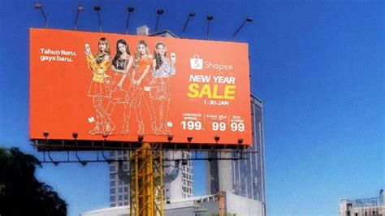

Contoh E-Commerce B2B (Business to Business)
dan B2C (Business to Customer)
H1D020008 | Dieny 'Izzaty | E-commerce ESOFTWARESENI
PROFIL PERUSAHAAN
SoftwareSeni adalah perusahaan Software Development yang berbasis di Yogyakarta & Australia. SoftwareSeni juga merupakan perusahaan konsultasi IT yang melayani jasa pembuatan software, maintenance website, dan aplikasi. SoftwareSeni mengembangkan bisnis dengan menciptakan solusi berbasis website, memecahkan masalah sulit dari pengalaman pengguna (UX) hingga desain dan kode di seluruh dunia. SoftwareSeni sejak 2013 dengan klien Australia dan berkembang ke berbagai negara hingga di 2017, SoftwareSeni mulia bekerja sama dengan perusahaan Indonesia. Terhitung per 2021, SoftwareSeni memiliki lebih dari 200 staff professional yang ahli di setiap bidangnya. Integritas SoftwareSeni dan profesionalitas tim di dalam nya, membuat SoftwareSeni banyak dipercaya oleh perusahaan-perusahaan besar seperti Traveloka, Angkasa Putra, Astra Internasional, dan lain-lain.
DESKRIPSI PRODUK/JASA YANG DIBERIKAN
SoftwareSeni memiliki banyak service sesuai dengan kebutuhan digitalisasi perusahaan klien, diantaranya Desain Grafis, User Experience, Customer Service and Support, Application Development, hingga Wordpress & Plugin Development. Layanan yang diberikan pihak SoftwareSeni, yaitu pembuatan website perusahaan, aplikasi mobile, marketplace & ecommerce, dan custom software. Selain itu, SoftwareSeni juga memiliki model kerjasama yang beragam, diantaranya:
- Seat Outsourcing (Staf yang berdedikasi khusus untuk project)
- Ad Hoc (Tim yang siap sedia untuk request satuan)
- Project-based (Tim profesional untuk menyelesaikan target project)
MEKANISME KOMUNIKASI PEMASARAN
Mekanisme pemasaran yang digunakan softwareseni salah satunya adalah Periklanan (Advertising) melalui Instagram Softwareseni Official

MEKANISME JUAL BELI
Pihak SoftwareSeni mempersiapkan tim staf sesuai bidangnya ketika klien melakukan kerjasama dengan SoftwareSeni. Klien terlebih dahulu melakukan persiapan, yaitu dengan menentukan kebutuhan dan spesifikasi, menetapkan tujuan dan sasaran, memfokuskan pada hal yang tepat, dan persiapan tersebut di dokumentasikan. Kemudian, klien menentukan model kerjasama apa yang akan dipilih sesuai dengan kebutuhan. Pihak SoftwareSeni akan menyesuaikan klien serta model kerjasama yang dipilih. Tim staf SoftwareSeni akan mulai bekerjasama dengan klien sampai proyek selesai.
MEKANISME PEMBAYARAN
Klien akan melakukan pembayaran sesuai kebutuhan dan pilihan model kerjasama dengan SoftwareSeni. SoftwareSeni akan memastikan produk digital yang dibuat sesuai dengan kebutuhan bisnis klien dan memastikan fitur, dan fungsi produk digital benar-benar sesuai dengan kebutuhan perusahaan klien.
MEKANISME DISTRIBUSI PRODUK/JASA
Pihak SoftwareSeni akan memberikan garansi layanan selama 1 bulan setelah proyek IT selesai. Proyek akan diterima setelah kedua belah pihak telah memastikan bahwa proyek sesuai dengan kebutuhan dan pembayaran disetujui.
FITUR-FITUR TAMBAHAN PADA E-COMMERCE
Fitur-fitur tambahan pada SoftwareSeni, diantaranya:
- Dapat melakukan konsultasi tentang project atau ketika ingin membuat aplikasi
- Blog berisi kumpulan artikel tentang perkembangan teknologi terkini
- Mengubah bahasa pada laman web tersebut ke bahasa Australia atau Indonesia
- Pencarian atau search engine

SHOPEE
Shopee merupakan salah satu platform yang menawarkan transaksi jual beli online yang mudah, aman, cepat, dan terpercaya dengan rancangan sistem pembayaran dan dukungan logistik yang kuat.
PROFIL PERUSAHAAN
Perusahaan Shopee merupakan salah satu bagian dari SEA Group asal Singapura. Shopee diluncurkan pertama kali pada tahun 2015 secara serentak di 7 negara, yaitu Singapura, Thailand, Malaysia, Taiwan, Indonesia, Filipina, dan Vietnam. Shopee yang bergerak di dunia e-commerce dipimpin oleh Chris Feng, salah satu mantan pegiat Rocket Internet yang pernah memimpin Zalora dan Lazada. Shopee bisa diakses melalui website dengan mengakses https://shopee.co.id/ dan melalui aplikasi dengan mendownload terlebih dahulu melalui Play Store maupun Apps Store.
Awalnya, Shopee merupakan perusahaan yang memiliki konsep bisnis C2C (Customer to Customer). Namun, seiring berjalannya waktu, Shopee beralih menjadi bisnis C2C (Customer to Customer) dan bisnis B2C (Bisnis to Customer) dengan hadirnya Shopee Mall pada tahun 2017. Bahkan, mulai tahun 2020 Shopee memiliki jasa pengiriman khusus untuk beberapa penjual terpilih, yang bisa disebut Shopee Express.
Untuk logo Shopee sendiri berkaitan dengan warna oranye yang berarti memiliki daya tarik. Logo tersebut menggambarkan sebuah keranjang belanjaan yang bertuliskan huruf ‘S’ dibagian depan keranjang yang mengartikan Shopee itu sendiri.
DESKRIPSI PRODUK/JASA YANG DIBERIKAN
Shopee menyediakan berbagai macam kategori produk, diantaranya elektronik, komputer, aksesoris, pakaian, makanan & minuman, souvenir & pesta, perlengkapan rumah, buku & alat tulis, otomotif, perawatan & kecantikan, fotografi, olahraga & outdoor, dan lain-lain.
Shopee memberikan jasa pembayaran secara online bisa melalui Bank, Minimarket, VISA, JCB, dan lain-lain. Jasa pengiriman juga diberikan oleh Shopee, seperti Shopee Xpress, JNE Express, Anteraja, Pos Indonesia, SICEPAT, J&T Express, dan lain-lain. Selain itu, Shopee juga menyediakan jasa pengembalian barang & dana.
MEKANISME KOMUNIKASI PEMASARAN
Komunikasi pemasaran merupakan suatu interaksi yang tertuju dengan konsumen dan calon konsumen menggunakan satu atau lebih media, seperti surat kabar, majalah, tabloid, televisi, billboard, telemarketing, radio, dan internet (Kayode, 2014). Adapun komunikasi pemasaran yang dilakukan Shopee, beberapa diantaranya:
- Periklanan (Advertising)
Iklan merupakan media komunikasi massa yang dapat dilakukan melalui media cetak atau media elektronik. Shopee menerapkan meode periklanan menggunakan media sosial dan telemarketing dan media cetak seperti:
- Shopee Instagram Official

- Billboard

- Shopee Instagram Official
- Promosi Penjualan
Promosi penjualan berfungsi untuk mendorong terjadinya transaksi pembelian suatu produk dalam waktu singkat. Shopee menerapkan promosi penjualan melalui alat promosi seperti:
MEKANISME JUAL BELI
Dalam proses jual beli, penjual terlebih dulu menentukan produk apa yang ingin dijual pada aplikasi Shopee. Kemudian penjual akan menawarkan produk lengkap dengan keterangan, kegunaan, dan foto produk yang dijual. Disisi lain, pembeli akan mencari produk sesuai yang dibutuhkan pembeli. Setelah menemukan produk yang dicari dan yakin terhadap produk tersebut, pembeli akan checkout keranjang dan melakukan pembayaran.
MEKANISME PEMBAYARAN
Pembayaran dilakukan setelah pembeli sudah yakin terhadap produk yang dicari dan melakukan checkout keranjang. Pembeli melakukan pembayaran secara online ke Shopee sekaligus mengisi alamat tujuan. Pembayaran bisa dilakukan dengan transfer melalui bank, minimarket yang menyediakan pembayaran shopee, Shopeepay, ataupun yang lainnya. Setelah itu dilakukan verifikasi pembayaran dan memilih jasa pengiriman produk yang sudah dipesan. Shopee akan mengecek pembayaran dan verifikasi pembayaran dan mengirim notifikasi ke penjual tersebut.
MEKANISME DISTRIBUSI PRODUK/JASA
Pembeli bebas memilih jasa pengiriman yang tersedia di Shopee, namun ada tambahan biaya setiap pilihan dan itu menyesuaikan pilihan pembeli. Setelah itu, Penjual akan mendapatkan notifikasi dari Shopee tentang pembayaran produk dan jasa pengiriman yang dipilih oleh pembeli. Penjual akan melakukan proses packing dan mengatur pengiriman produk yang sudah dipilih oleh pembeli. Pengiriman dilakukan via kurir hingga produk sampai tujuan. Setelah pembeli menerima produk, kurir akan memverifikasi bahwa produk sudah diterima oleh pembeli. Pihak Shopee akan mengirimkan dana transaksi jual beli yang sudah dilakukan. Pembeli juga akan memverifikasi bahwa produk sudah diterima dan melakukan penilaian produk. Penilaian tersebut mempengaruhi nilai ketertarikan produk yang ada pada penjual/toko online tersebut.
FITUR-FITUR TAMBAHAN PADA E-COMMERCE
Fitur-fitur tambahan pada Shopee, meliputi:
- Penawaran seperti voucher diskon, cashback, dan gratis ongkir.
- Pembayaran dengan koin Shopee.
- Shopee games, untuk mendapatkan koin shopee secara gratis ataupun hadiah lain.
- Shopee live dan Live chat, untuk mempromosikan dan berkomunikasi secara langsung antara penjual dan pembeli dengan mudah.
- Keranjang belanja, tempat barang yang akan di checkout.
- Pencarian atau search engine, untuk mencari produk yang dibutuhkan.
- Notifikasi, untuk mengetahui informasi penting yang dikirimkan oleh pihak Shopee seperti produk yang sudah dikirimkan atau sudah diterima, dan lain--lain.
- Event per bulan atau setiap ada hari besar, koin dan hadiah gratis lainnya, serta reward koin setiap hari.
- SPayLater, melakukan pembelian terlebih dahulu, pembayaran dengan saldo dari shopee, nantinya mengganti dengan membayar ke shopee.
- Shopee Food, mirip dengan gofood ataupun grabfood.
- ShopeePay, pembayaran melalui Shopee dengan mengisi saldo Shopee terlebih dahulu.
- Feed, mempromosikan produk yang dijual, dapat memberikan suka, komentar, dan membagikan.
Referensi:
Masduki, Z.H., 2020. Penerapan Komunikasi Pemasaran Dan Handling Customer Pada Pt Shopee International Indonesia. pdf